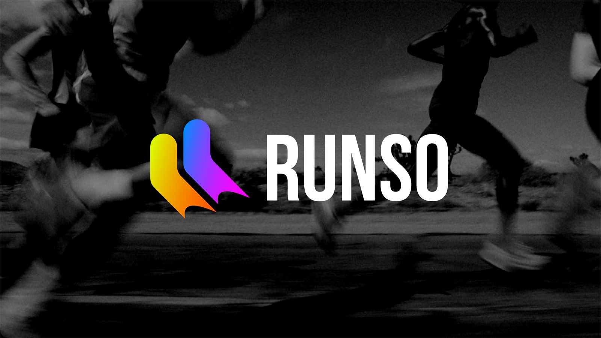
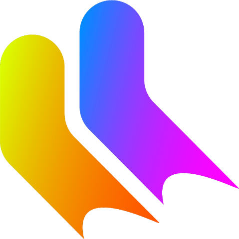
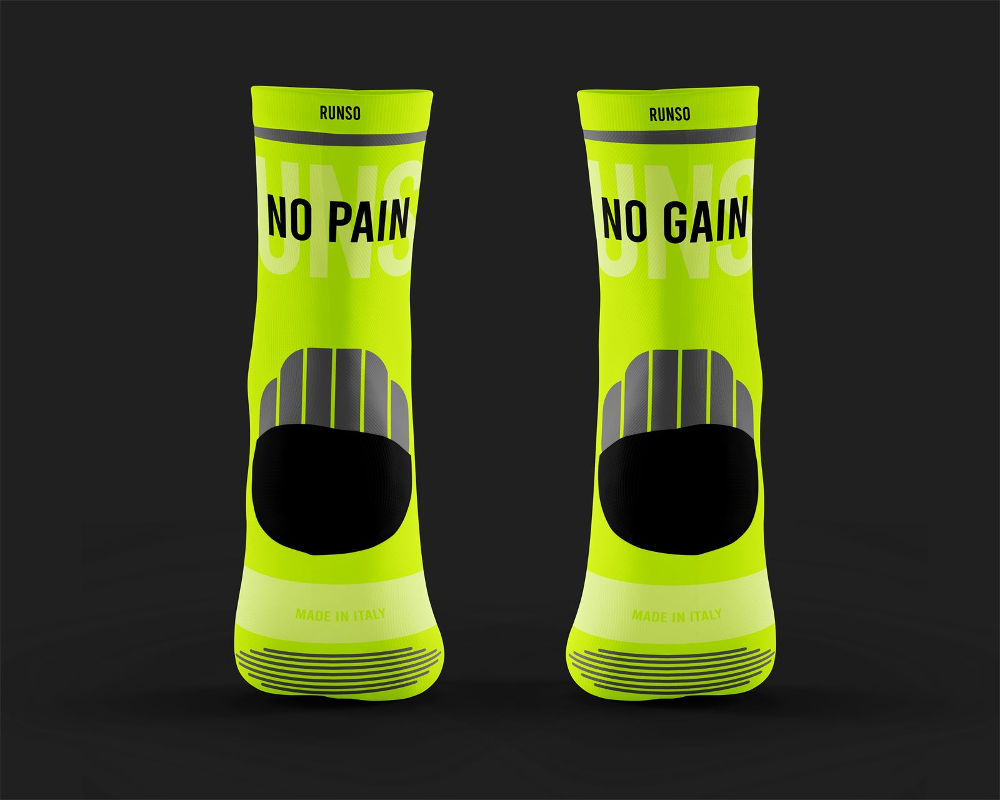
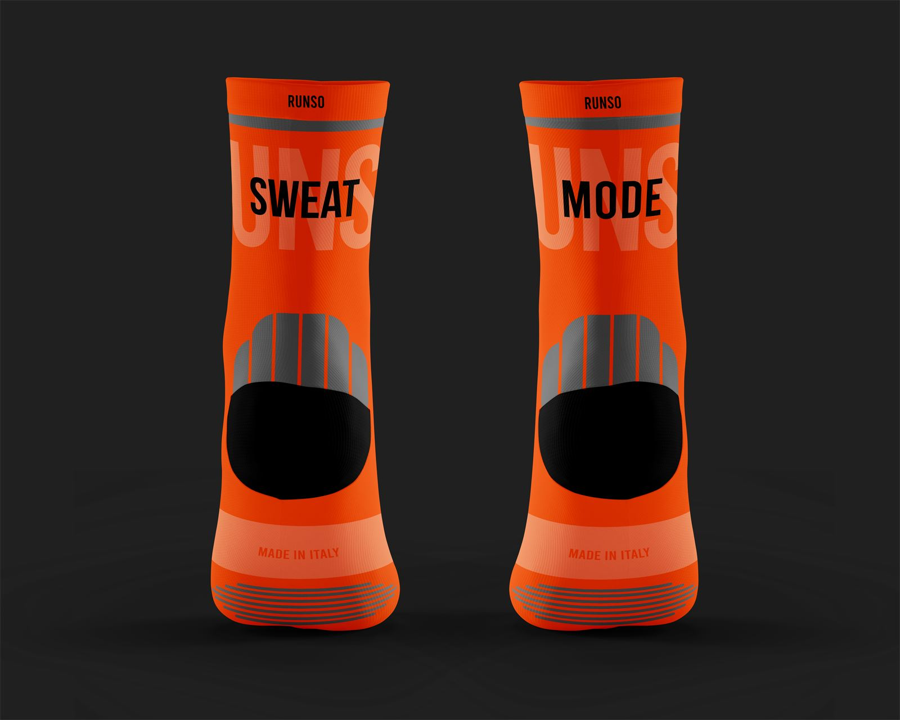
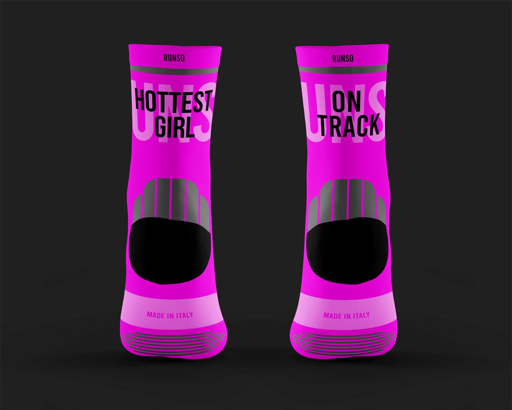
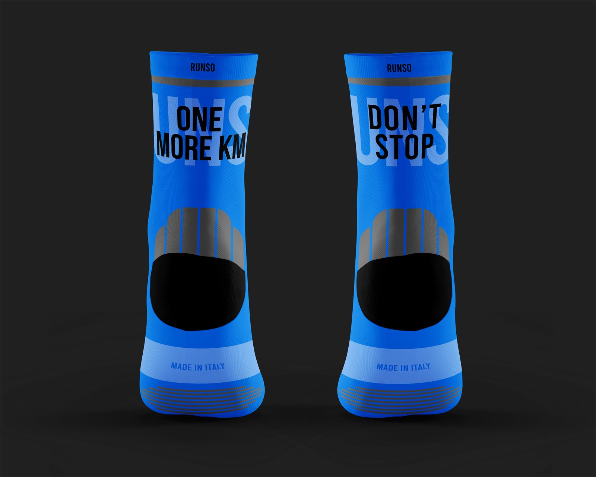

Running + socks. Calze tecniche da corsa che tengono insieme performance, stile e sicurezza.
Progetto personale
Brand identity
Prodotto e packaging
2025-2026

In Italia si corre sempre di più
Il brief che mi sono dato: un accessorio per la corsa che faccia correre in sicurezza e con stile, senza rinunciare alla performance.
2.658.161finisher su mezza maratona e maratona nel 2024
+18,1%rispetto al 2023
72.722finisher di maratona in Italia nel 2025, 19.225 in più del 2024
La corsa è tra i quattro sport più praticati in Italia
Ginnastica15,2%
Calcio e futsal9,6%
Danze e balli7,1%
Atletica e corsa4,3%
Ciclismo4,2%
Dati 2025, Centro Studi Sport e Salute su dati RASD.
E cresce sia all'aperto sia al chiuso
Corsa indoor+16%
Escursionismo+12%
Camminata+7%
Corsa all'aperto+6%
Insights Garmin per fitness e wellness 2025. Finisher: classifica annuale delle maratone italiane di Tuttosport.
Una calza, tre promesse
Una collezione di calze da running che garantisce sicurezza e performance, ma anche stile a chi le indossa.
Performance
Compressione mirata, filati tecnici e zone rinforzate per durare di più. Il meglio delle calze da running in commercio.
Stile
Colori vivaci che si abbinano alle scarpe da running e scritte motivazionali per spingere te e chi ti sta dietro.
Sicurezza
Colori accesi ed elementi catarifrangenti: ti vedono anche quando c'è poca luce.
Corrono, e lo postano
Il target principale: giovani tra i 18 e i 29 anni.
La Gen Z è disposta a gareggiare su tutte le distanze, trova comunità nei run club e vede Strava come il nuovo social. I kudos servono a celebrare i successi degli altri.
Sono persone che amano postare i propri risultati e curano l'outfit di corsa: chi condivide il tempo migliore guarda anche le scarpe e le calze con cui l'ha fatto.
Altri possibili target: tra i 30 e i 39 anni, più cardio indoor e tapis roulant; tra i 40 e i 49 anni, il trail running.
Cinque requisiti per un buon passo
Le linee guida del progetto, dopo l'analisi di tre brand di calze da running: Pacific and Colors, Sporcks e Shyu.
Durabilità
Deve durare almeno quanto i chilometri consigliati della scarpa.
Sicurezza
Compressione e sistemi antivesciche proteggono il piede.
Performance
Compressione mirata, traspirabilità e ammortizzazione per correre a lungo.
Made in Italy
Prodotta in Italia da aziende specializzate del settore.
Visibilità
Catarifrangenti e colori accesi per le ore buie.
Fluo su nero
Il nome nasce da running + socks. Il logo sono due calze in corsa, con un gradiente che attraversa i quattro colori del brand e si ripete in pattern.
Titoli in Bebas Neue e Fugaz One, testi in Arial. Il nero fa da palcoscenico, il colore porta l'energia.
Logo e logotipo

RUNSO
Versioni a un colore
Palette colori
Orange SlicePantone 16-1355 TSX
Safety YellowPantone 13-0630 TN
Electric Blue LemonadePantone 18-4245 TN
Knockout PinkPantone 16-2130 TN
Pattern
Font
Bebas Neue Bold
Fugaz One
Arial
Il nome
RUNSO = RUNNING + SOCKS
Ogni zona ha un compito
Una crew sock da 15 cm, a metà polpaccio. Ogni parte della calza risponde a una linea guida.
Strisce catarifrangentisul polsino, per farsi vedere
Antisfregamento e rinforzo sul tallonedove la scarpa lavora di più
Fascia traspirantefa respirare il piede sui chilometri lunghi
Rinforzo sulla puntadove la calza si consuma di più
Quattro colori, una frase per piede
Ogni coppia ha una frase sul retro, divisa tra destra e sinistra. Serve a te e a chi ti corre dietro. I fluo si abbinano alla maggior parte delle scarpe da running.

No pain / No gain

Sweat / Mode

Hottest girl / On track

One more km / Don't stop
Un doypack che si richiude
Una busta in plastica riciclata: protegge le calze in viaggio e, con la zip richiudibile, comunica un prodotto premium.
È uguale per tutta la collezione. Quando si prepara l'ordine si segnano il colore e la taglia negli appositi riquadri. Sul retro ci sono le informazioni tecniche della calza.